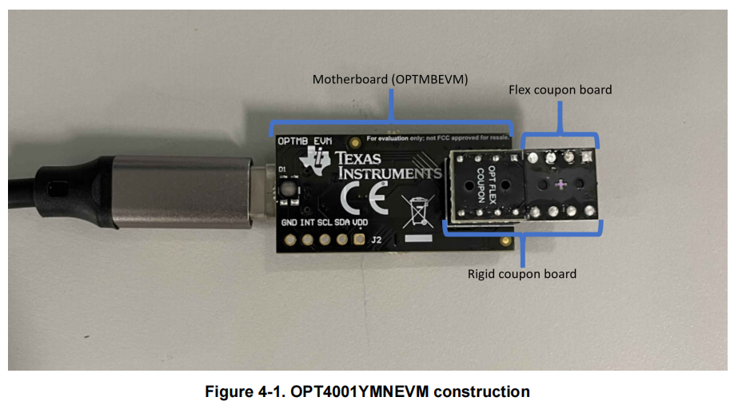
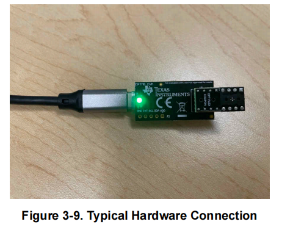
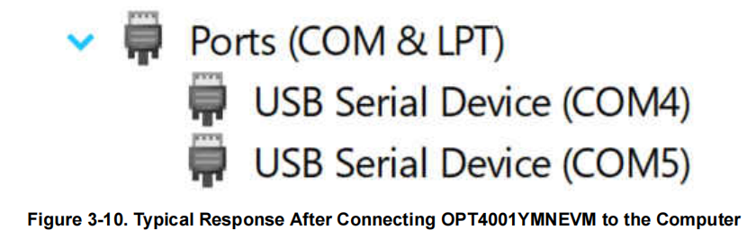
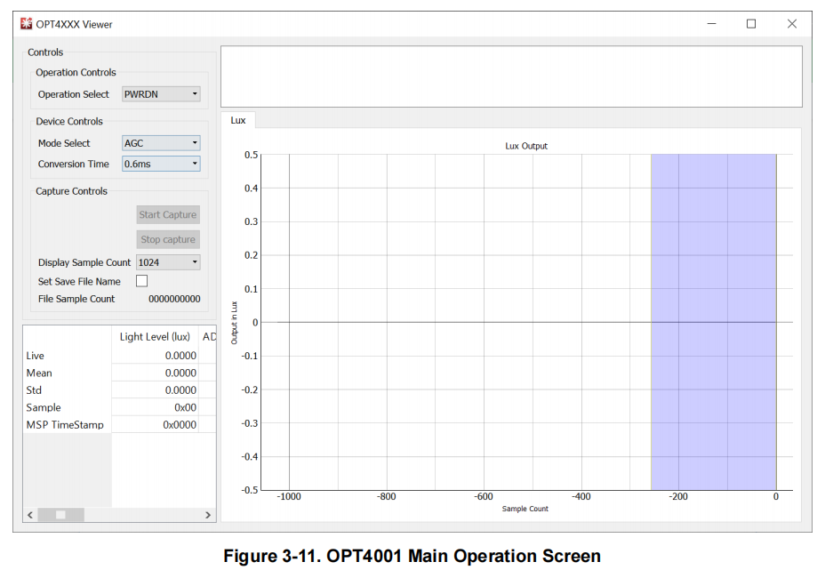
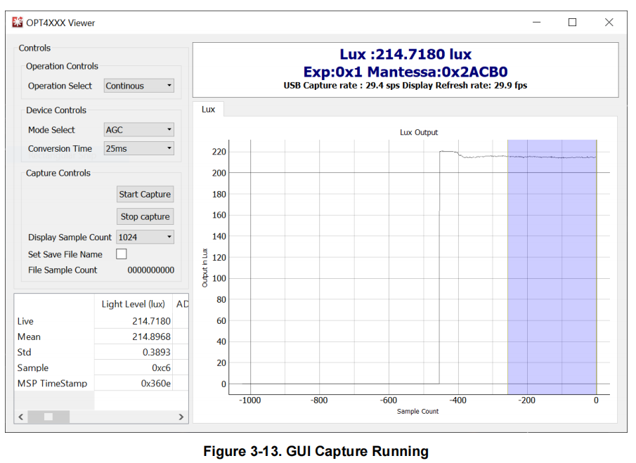

快速开始：采集第一组环境光数据
本页帮助第一次使用 OPT4001YMNEVM 的读者完成首次环境光数据采集。
完成后，EVM GUI 中应显示实时 lux 数值，曲线区域持续出现新的数据点。
预计用时：5—10 分钟，不包括软件安装。
验证状态
本页根据 TI 《OPT4001YMNEVM User's Guide》和《OPT4001 Datasheet》整理。操作步骤、界面状态和错误提示均有官方资料依据。
作者目前没有 OPT4001YMNEVM 实物，尚未独立复现软件安装、硬件连接和数据采集过程。页面中的界面图片来自 TI 官方文档，不代表作者的实测结果。
完成后你将看到
完成本页操作后，应获得以下结果：
- OPTMBEVM 母板已通过 USB 连接电脑；
- Windows 已识别评估板对应的两个 COM 端口；
- EVM GUI 已正常启动；
Operation Select已设为Continuous；- EVM GUI 显示 lux 数值，曲线持续更新。
开始前准备
| 项目 | 要求 |
|---|---|
| 评估套件 | OPT4001YMNEVM |
| 板卡状态 | OPT4001YMN coupon board 已插入 OPTMBEVM 母板 |
| 连接线 | USB-A 转 USB-C 线 |
| 电脑 | Windows 电脑 |
| 软件 | 已安装 OPT4001 EVM GUI（基于 TI Latte） |
本页从硬件检查开始，假设 EVM GUI 已经安装完成。
软件可从 TI OPT4001EVM 官方产品页获取。官方指南第 7—11 页提供了完整安装过程；本页不重复安装向导中的每一步操作。
首次采集路径
检查 coupon board
→ 连接 USB
→ 确认母板被 Windows 识别
→ 启动 EVM GUI
→ 选择 Continuous
→ 点击 Start Capture
→ 查看 lux 数值和曲线
步骤 1：检查 coupon board
OPT4001YMNEVM 出厂时，coupon board 通常已经插在母板上。完成首次采集不需要将它拆下。
开始连接 USB 前，确认：
- coupon board 已完整插入母板插座；
- 安装方向与官方图片一致；
- flex coupon board 没有被按压或弯折。

OPT4001YMN coupon board 的安装位置。来源：TI 《OPT4001YMNEVM User's Guide》，Figure 4-1，第 19 页。
拿取 coupon board
需要插拔 coupon board 时，只握住 rigid coupon board。
不要按压 flex coupon board。柔性 PCB 较薄，受到压力可能损坏。操作评估板时还应遵守基本的静电防护要求。
成功时你会看到
Coupon board 稳固插入母板，安装方向与图片一致，flex PCB 没有受到挤压。
如果不确定
暂时不要连接 USB。先对照图片重新确认板卡方向，并检查插针是否完整进入插座。
关于三块板分别承担什么作用，见评估系统与光学硬件结构。
步骤 2：连接评估板
- 将 USB-C 接头插入 OPTMBEVM 母板；
- 将 USB-A 接头插入 Windows 电脑；
- 等待 Windows 完成设备识别。

OPT4001YMNEVM 的 USB 连接方式。来源：TI 《OPT4001YMNEVM User's Guide》，Figure 3-9，第 11 页。
成功时你会看到
- OPTMBEVM 母板上的绿色 LED 亮起；
- Windows 设备管理器中出现两个 COM 端口。

评估板正常枚举后，Windows 设备管理器中出现两个 COM 端口。来源：TI 《OPT4001YMNEVM User's Guide》，Figure 3-10，第 12 页。
如果没有出现上述结果
依次检查：
- USB 线两端是否完全插入；
- 母板绿色 LED 是否亮起；
- Windows 设备管理器中是否出现未正确安装的设备；
- 重新连接 USB 后，设备列表是否发生变化。
如果 Windows 提示找不到驱动，请先查看官方指南第 28—34 页的驱动说明。该部分针对 Windows 7，不应直接作为所有 Windows 版本的通用处理方法。
步骤 3：启动 EVM GUI
在 Windows 开始菜单中启动 OPT4001 EVM GUI（基于 TI Latte）。
等待软件加载并打开 OPT4001 主操作界面。

OPT4001 EVM GUI 主操作界面。来源：TI 《OPT4001YMNEVM User's Guide》，Figure 3-11，第 13 页。
成功时你会看到
OPT4001 主操作界面正常打开，页面中没有显示母板连接错误。
如果出现 OPT4001 Connection Problem
该提示表示 EVM GUI 没有检测到 OPTMBEVM 母板。
先检查：
- USB 是否仍然连接；
- 母板绿色 LED 是否亮起；
- Windows 是否识别出两个 COM 端口。
确认硬件连接后，关闭并重新启动 EVM GUI。
步骤 4：开始连续采集
在 EVM GUI 主界面中：
- 打开
Operation Select； - 选择
Continuous； - 点击
Start Capture。

在 Operation Select 中选择 Continuous，再点击 Start Capture。EVM GUI 随后显示 lux 数据和实时曲线。来源：TI 《OPT4001YMNEVM User's Guide》，Figure 3-13，第 14 页。
Continuous 会让 OPT4001 持续进行环境光测量并更新结果。Quick Start 不展开其中的寄存器配置和数据换算过程。
成功时你会看到
- EVM GUI 中出现 lux 数值；
- 曲线区域持续增加新的测量点。
如果出现 REGRx01 Failed
该错误表示母板未能正常读取 OPT4001 IC 或 coupon board。
先检查：
- coupon board 是否已经插入母板；
- coupon board 的安装方向是否正确。
检查时只握住 rigid coupon board，不要按压 flex PCB。
完成标准
满足以下条件，即可认为已经完成首次采集：
- [ ] EVM GUI 已正常打开；
- [ ]
Operation Select已设为Continuous； - [ ] 已点击
Start Capture； - [ ] EVM GUI 中出现 lux 数值；
- [ ] 曲线持续出现新的数据点。
本页的完成标准是“EVM GUI 已经显示持续更新的测量结果”。
常见问题
EVM GUI 找不到母板
现象
启动软件后出现 OPT4001 Connection Problem。
先检查
- USB 连接；
- 母板绿色 LED；
- Windows 设备管理器中的两个 COM 端口。
这类问题发生在电脑、USB 和母板之间。此时还不能据此判断 OPT4001YMN 传感器是否正常。
出现 REGRx01 Failed
现象
EVM GUI 可以启动，但 Latte Scripts 窗口显示：
Operation I2C Register Read for command [REGRx01] Failed
先检查
- coupon board 是否已经插入；
- coupon board 方向是否正确。
这类问题发生在母板与 coupon board 或传感器之间。
更完整的检查顺序见故障排查。
资料来源
OPT4001YMNEVM User's Guide
文档编号：SBOU278，December 2021
- coupon board 安装与操作注意事项：第 6 页；
- 软件获取与安装：第 7—11 页；
- USB 连接和绿色 LED：第 11 页；
- 两个 COM 端口：第 12 页；
- EVM GUI 启动与母板连接错误：第 13 页；
Continuous、Start Capture和 lux 曲线：第 14 页。
OPT4001 Datasheet
文档编号：SBOS993A，revised December 2022
- Power-down 与 Continuous 工作模式：第 13 页；
OPERATING_MODE字段：第 31 页。
关于这篇 Quick Start
这篇文档先定义“第一次成功”的完成标准：在 EVM GUI 中看到实时 lux 数值和持续更新的曲线。再从这个结果倒推准备条件、操作步骤、可观察结果，以及失败时最先需要检查的位置。
关于这一写作方法的完整复盘，见《如何写一篇让读者真正跑通的 Quick Start》。